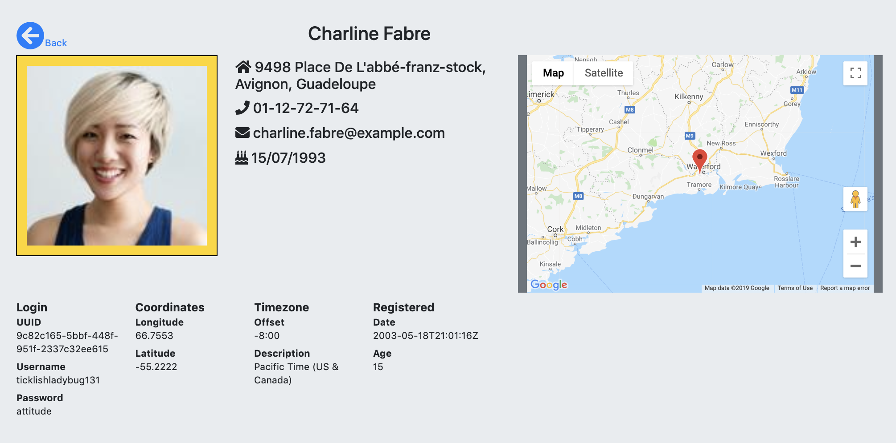
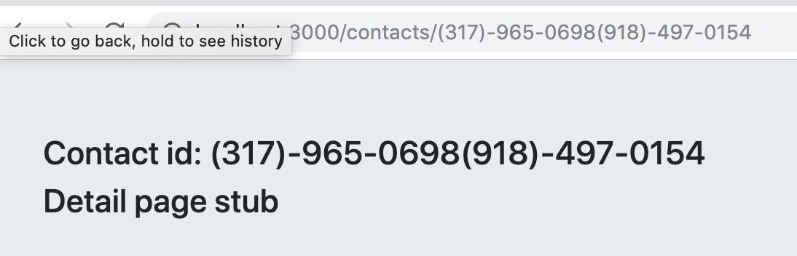
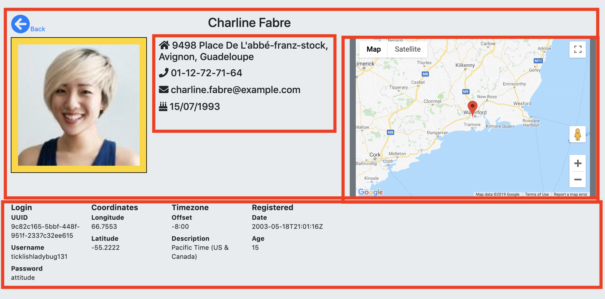
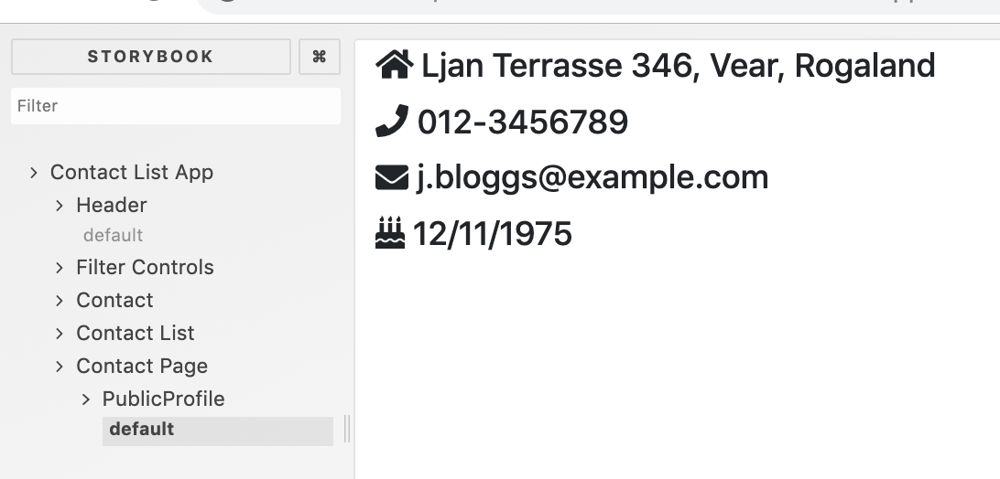
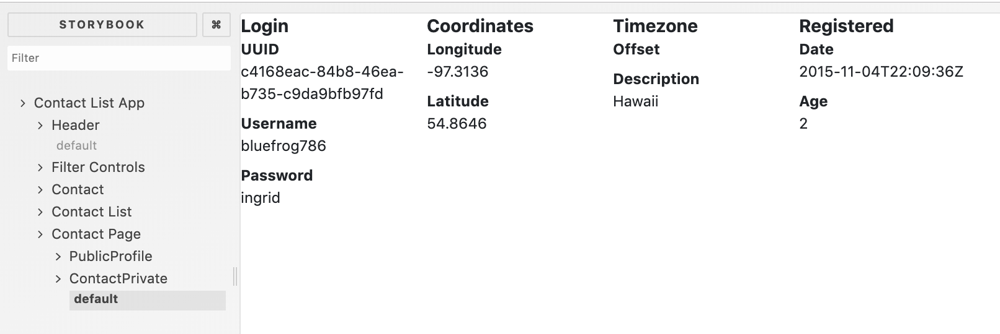
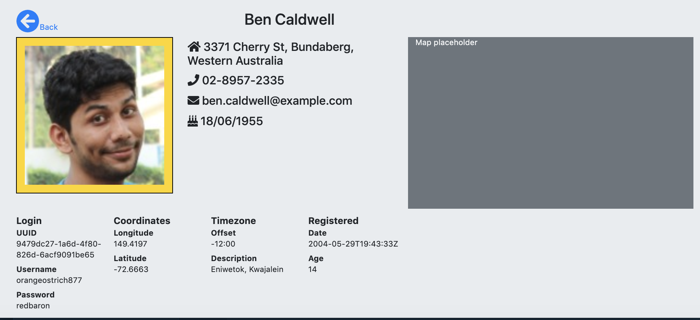
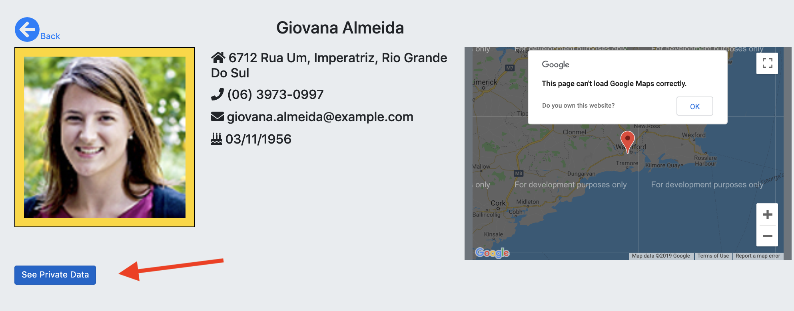

In this lab we add routing to the Contact List app.
The objective is to display detailed information about a contact when the user clicks their image on the main view - see example below:

The additional information shown on this new page is taken from the JSON structure returned by the RandomUser API. Included in the structure are longitude and latitude readings, however, they are randomly generated and do not correlate to the contact address property. For this reason the map on the right is fixed at WIT, Waterford for demo purposes.
The URL for the new view will be parameterized, for example:
'http://localhost:3000/contacts/(810)-622-3633(535)-237-9962', where (810)-622-3633(535)-237-9962 is a concatenation of the phone number and cell number for the contact (somewhat arbitrary).
The general form of the URL is:
In React apps routing is provided by a separate package - see react-router-dom entry in dependencies section of package.json.
Some routing code changes we will make to existing components will break our Storybook code. To preempt this some enhancements are required in stories/index.js. Add an import at the top:
import { MemoryRouter, Route } from "react-router";Replace the Contact and Contact List stories with the following:
storiesOf("Contact List App/Contact", module)
.addDecorator(story => (
<MemoryRouter initialEntries={["/"]}>{story()}</MemoryRouter>
))
.add("default", () => (
<Contact contact={sample} deleteHandler={action('Delete confirmed') }/>
));
storiesOf("Contact List App/Contact List", module)
.addDecorator(story => (
<MemoryRouter initialEntries={["/"]}>{story()}</MemoryRouter>
))
.add("default", () => {
const samples = [sample, sample, sample, sample, sample]
return <ContactList contacts={samples}/>
});The addDecorator() method wraps our custom component (e.g. Contact) inside a React framework component. The MemoryRouter component is a simple replacement for the Router component that will be required in the app itself - see later.
In the same file, replace the 'sample' const declaration with the following:
const sample = {
name: {first:'Joe', last:'Bloggs'},
location: {
street: "ljan terrasse 346",
city: "vear",
state: "rogaland",
postcode: "3095",
coordinates: {
latitude: "54.8646",
longitude: "-97.3136"
},
timezone: {
offse: "-10:00",
description: "Hawaii"
}
},
"login": {
"uuid": "c4168eac-84b8-46ea-b735-c9da9bfb97fd",
"username": "bluefrog786",
"password": "ingrid",
"salt": "GtRFz4NE",
"md5": "5c581c5748fc8c35bd7f16eac9efbb55",
"sha1": "c3feb8887abed9ec1561b9aa2c9f58de21d1d3d9",
"sha256": "684c478a98b43f1ef1703b35b8bbf61b27dbc93d52acd515e141e97e04447712"
},
"dob": {
"date": "1975-11-12T06:34:44Z",
"age": 42
},
"registered": {
"date": "2015-11-04T22:09:36Z",
"age": 2
},
email: 'j.bloggs@example.com',
phone: '012-3456789',
picture: {thumbnail: './profile.png',
large: './profile.png'}
}We will be using some extra icons from Font Awesome in the new page. Replace the content of src/fontawesome.js with the following:
import { library } from "@fortawesome/fontawesome-svg-core";
import {
faEnvelope,
faPhone,
faHome,
faBirthdayCake,
faArrowCircleLeft
} from "@fortawesome/free-solid-svg-icons";
library.add(faEnvelope, faPhone, faHome, faBirthdayCake, faArrowCircleLeft);Finally, we also need a utility function to capitalize multi-word strings, for example, an address. Create the file src/util.js and add the following:
export function capitalize(string)
{
return string.replace(/\w\S*/g, function(txt){
return txt.charAt(0).toUpperCase() + txt.substr(1).toLowerCase();
});
}Go to the twoApps/contactList folder and commit this work:
$ git add -A
$ git commit -m "Routing setup completed"In src/index.js, replace the entire content with the following:
import React, { Component } from "react";
import ReactDOM from "react-dom";
import { BrowserRouter, Route, Redirect, Switch } from "react-router-dom";
import request from "superagent";
import api from "./dataStore/stubAPI"; // NEW
import "../node_modules/bootstrap/dist/css/bootstrap.css";
import App from "./App";
import ContactPage from "./components/contactPage";
class Router extends Component {
componentDidMount() {
request.get("https://randomuser.me/api/?results=50").end((error, res) => {
if (res) {
let { results: contacts } = JSON.parse(res.text);
api.initialize(contacts);
this.setState({});
} else {
console.log(error);
}
});
}
render() {
return (
<BrowserRouter>
<div className="jumbotron">
<div className="container-fluid ">
<Switch>
<Route path="/contacts/:id" component={ContactPage} />
<Route exact path="/" component={App} />
<Redirect from="*" to="/" />
</Switch>
</div>
</div>
</BrowserRouter>
);
}
}
ReactDOM.render(<Router />, document.getElementById("root"));[These changes introduce some errors which can be ignored for the moment.]
Some points to note in the above code:
In src/App.js, remove the componentDidMount method - this logic has now been promoted to the Router component. Change the return statement of the render method to this:
return (
<Fragment>
<Header noContacts={sortedContacts.length} />
<FilterControls onUserInput={this.handleChange} />
<ContactList
contacts={sortedContacts}
deleteHandler={this.deleteContact}
/>
</Fragment>
);In the same file import the Fragment tag from React:
import React, { Component, Fragment } from "react";Create the file src/components/contactPage.js for the new view/page. It will need a significant amount of code, however, we will use a stub implementation for starters. Add the following code to the file:
import React, {Fragment} from "react";
import { withRouter } from "react-router-dom";
const ContactPage = props => {
return (
<Fragment>
<h3> Contact id: {props.match.params.id} </h3>
<h3> Detail page stub </h3>
</Fragment>
);
};
export default withRouter(ContactPage);For variety we are using the stateless functional component style - the class style would work as well. The main feature to note here is how the component accesses the parameter portion of the active URL address (a contact id). The withRouter() function injects various routing-related props in to the component, including the props.match.params object. Before testing the new page, we need to implement hyperlinks in the main page. In src/components/contact/indexc.js, in the return statement of the render method, wrap the current img tag in a Link component:
<Link
to={`/contacts/${this.props.contact.phone}${this.props.contact.cell}`}
>
<img
className="card-img-tag center "
alt={this.props.contact.name}
src={this.props.contact.picture.thumbnail}
/>
</Link>Also, add an import at the top:
import { Link } from "react-router-dom";Link is an alternative to the standard HTML anchor tag. Link is integrate with the React Router system whereas the anchor tag is only suitable for external hyperlinks.
Start the development server (npm start). In the browser, click on any contact to navigate to the stub detail page:

Go to the twoApps/contactList folder and commit this work:
$ git add -A
$ git commit -m "Stub contact page working"The image below shows the component breakdown we will develop:

This yields a component hierarchy as follows:
ContactPage
|
------------------
| | |
ContactPublic ContactPrivate
|
----------------
| |
PublicProfile Map Crete the file src/components/contactPublic/publicProfile.js and add the following:
import React, { Fragment } from "react";
import { capitalize } from "../../util";
import "../../fontawesome";
import { FontAwesomeIcon } from "@fortawesome/react-fontawesome";
export default ({ user }) => {
const address = capitalize(
`${user.location.street}, ${user.location.city}, ${user.location.state}`
);
const dob = user.dob.date.split("-");
const birthdate = `${dob[2].substr(0, 2)}/${dob[1]}/${dob[0]} `;
return (
<Fragment>
<h4>
<FontAwesomeIcon icon={["fas", "home"]} />
<span> {address}</span>
</h4>
<h4>
<FontAwesomeIcon icon={["fas", "phone"]} />
<span> {user.phone}</span>
</h4>
<h4>
<FontAwesomeIcon icon={["fas", "envelope"]} />
<span> {user.email}</span>
</h4>
<h4>
<FontAwesomeIcon icon={["fas", "birthday-cake"]} />
<span> {birthdate}</span>
</h4>
</Fragment>
);
};The expression '( {user} )' in the component function declaration is shorthand for declaring a variable 'user' and assigning it to 'props.user'.
In stories/index.js add a new story:
...... other imports .......
import PublicProfile from '../src/components/contactPublic/publicProfile'
..... other stories .....
storiesOf("Contact List App/Contact Page/PublicProfile", module)
.add("default", () => (
<PublicProfile user={sample}/>
));Start the storybook server:
$ npx start-storybook -c .storybook/ -p 9001 -s ./public/Test the new story:

Go to the twoApps/contactList folder and commit this work:
$ git add -A
$ git commit -m "PublicProfile component completed"Crete the file src/components/contactPrivate/index.js and add the following:
import React from "react";
import "./contactPrivate.css";
import "../../fontawesome";
export default ({ user }) => {
return (
<div className="row">
<div className="col-12">
<ul className="specs">
<li>
<span>Login</span>
<dl>
<dt>UUID</dt>
<dd>{user.login.uuid}</dd>
<dt>Username</dt>
<dd>{user.login.username}</dd>
<dt>Password</dt>
<dd>{user.login.password}</dd>
</dl>
</li>
<li>
<span>Coordinates</span>
<dl>
<dt>Longitude</dt>
<dd>{user.location.coordinates.longitude}</dd>
<dt>Latitude</dt>
<dd>{user.location.coordinates.latitude}</dd>
</dl>
</li>
<li>
<span>Timezone</span>
<dl>
<dt>Offset</dt>
<dd>{user.location.timezone.offset}</dd>
<dt>Description</dt>
<dd>{user.location.timezone.description}</dd>
</dl>
</li>
<li>
<span>Registered</span>
<dl>
<dt>Date</dt>
<dd>{user.registered.date}</dd>
<dt>Age</dt>
<dd>{user.registered.age}</dd>
</dl>
</li>
</ul>
</div>
</div>
);
};Create the associated CSS file src/components/contactPrivate/contactPrivate.css and add the following:
ul.specs {
clear: both;
margin: 0;
padding: 0;
list-style: none;
}
ul.specs > li{
display: inline-block;
width: 200px;
vertical-align: top;
}
ul.specs > li > span{
font-weight: bold;
font-size: 1.2em;
}In stories/index.js add a new story:
...... other imports .......
import ContactPrivateDetails from '../src/components/contactPrivate/'
..... other stories .....
storiesOf("Contact List App/Contact Page/ContactPrivate", module)
.add("default", () => (
<ContactPrivateDetails user={sample}/>
));Test the new story:

Go to the twoApps/contactList folder and commit this work:
$ git add -A
$ git commit -m "ContactPrivate component completed"Create the file src/components/contactPublic/index.js and paste in the following:
import React, { Fragment } from "react";
import { capitalize } from "../../util";
import "../../fontawesome";
import { FontAwesomeIcon } from "@fortawesome/react-fontawesome";
import "./contactPublic.css";
import { Link } from "react-router-dom";
import PublicProfile from "../contactPublic/publicProfile"
export default ({ user }) => {
const name = capitalize(`${user.name.first} ${user.name.last}`);
return (
<Fragment>
<div className="row">
<div className="col-2">
<Link to="/">
<FontAwesomeIcon icon={["fas", "arrow-circle-left"]} size="3x" />
<span>Back</span>
</Link>
</div>
<div className="col-3 offset-2">
<h2>{name}</h2>
</div>
</div>
<div className="row">
<div className="col-3">
<img src={user.picture.large} className="contact" alt={name} />
</div>
<div className="col-4">
<PublicProfile user={user} />
</div>
<div className="col-5 bg-secondary text-light">
<span>Map placeholder</span>
</div>
</div>
</Fragment>
);
};In truth this component is quite large and could be subdivided into smaller sub-components. Also, the Google Map section will be covered in a later lab.
Crete an associated CSS file src/components/contactPublic/contactPublic.css:
img.contact {
float: left;
border: 1px solid black;
margin-bottom: 2em;
background-color: gold;
padding: 1em;
width: 100%;
}
.row {
margin-bottom: 10px;
}As an exercise you could write a story for this component. [Hint: You will need to decorate it with the MemoryRouter to prevent storybook reporting an error related to the Link component].
Go to the twoApps/contactList folder and commit this work:
$ git add -A
$ git commit -m "ContactPublic component implemented"Replace the content of src/components/contactPage.js with the following:
import React, { Fragment } from "react";
import { withRouter } from "react-router-dom";
import api from "../dataStore/stubAPI"; // NEW
import ContactPublic from "../components/contactPublic/";
import ContactPrivate from "../components/contactPrivate/";
const ContactPage = props => {
const { id } = props.match.params;
const contact = api.find(id);
return (
<Fragment>
{contact ? (
<Fragment>
<ContactPublic user={contact} />
<ContactPrivate user={contact} />
</Fragment>
) : (
<p>Waiting for contact details</p>
)}
</Fragment>
);
};
export default withRouter(ContactPage);Start the development server (npm start) and click on any contact in the main view to see the new contact page.

Go to the twoApps/contactList folder and commit this work:
$ git add -A
$ git commit -m "Contact page without Map working"To demonstrate nested routes, suppose the 'private data' for a contact is displayed only when the browser URL is:
'http://localhost:3000/contacts/:id/private' - the /private is an extension to the normal URL for the ContactPage view.
The UI for the Cintact Page will now look as follows:

On clicking the 'See Private Data' button, the URL will change and the additional private data will display - in practice a user might be required to authenticate after clicking the button.
In components/contactPage.js include some additional imports from react-router:
import { withRouter, Route, Link } from "react-router-dom";Change the return statement of the functional component to this:
return (
<Fragment>
{contact ? (
<Fragment>
<ContactPublic user={contact} />
{!props.history.location.pathname.endsWith("/private") && (
<Link class="btn btn-primary active" to={`/contacts/${id}/private`}>See Private Data</Link>
)}
<Route path={`/contacts/:id/private`}
render={ (props) => <ContactPrivate {...props} user={contact} /> } />
</Fragment>
) : (
<p>Waiting for contact details</p>
)}
</Fragment>
);The new 'See Private Data' button display is conditional on the current browser URL (props.history.location.pathname), i.e. display the buttom when the URL does NOT end with '/private'.
In the browser you must return to the main view and them click a contacxt again.
Go to the twoApps/contactList folder and commit this work:
$ git add -A
$ git commit -m "Added nested route for private data"